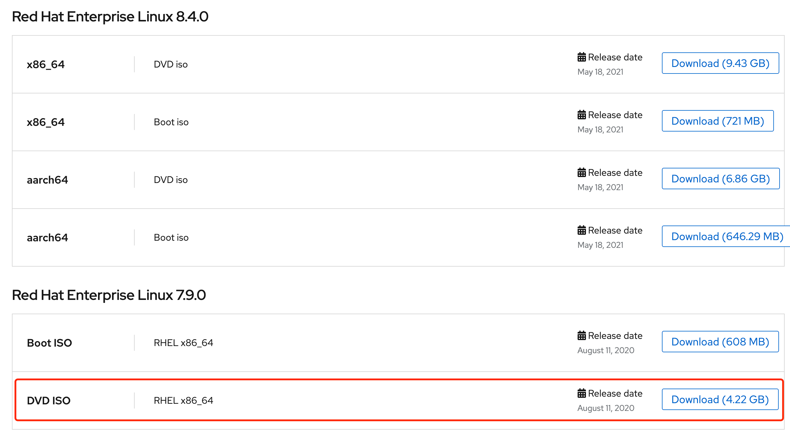
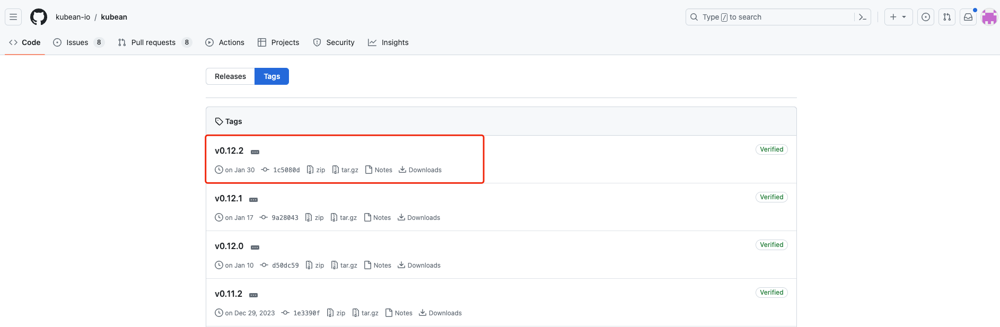
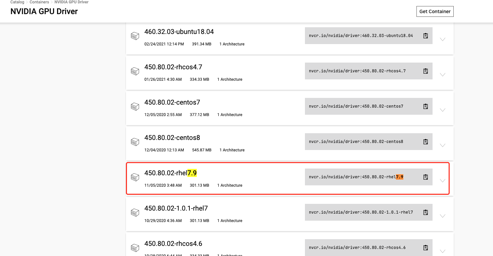

Build an Offline Yum Repository for Red Hat 7.9¶
Introduction¶
AI platform comes with a pre-installed CentOS 7.9 with GPU Operator offline package for kernel 3.10.0-1160. You need to manually build an offline yum repository for other OS types or nodes with different kernels.
This page explains how to build an offline yum repository for Red Hat 7.9 based on any node in the Global cluster, and how to use the RepoConfig.ConfigMapName parameter when installing the GPU Operator.
Prerequisites¶
- The cluster nodes where the GPU Operator is to be deployed must be Red Hat 7.9 with the exact same kernel version.
- Prepare a file server that can be connected to the cluster network where the GPU Operator is to be deployed, such as nginx or minio.
- Prepare a node that can access the internet, the cluster where the GPU Operator is to be deployed, and the file server.
- The nodes in the global service cluster must be Red Hat 7.9.
Steps¶
1. Build Offline Yum Repo for Relevant Kernel¶
-

-
Download the rhel7.9 ospackage that corresponds to your Kubean version.
Find the version number of Kubean in the Container Management section of the Global cluster under Helm Apps.
Download the rhel7.9 ospackage for that version from the Kubean repository.

-
Import offline resources using the installer.
2. Download Offline Driver Image for Red Hat 7.9 OS¶
Click here to view the download url.

3. Upload Red Hat GPU Operator Offline Image to Boostrap Node Repository¶
Refer to Upload Red Hat GPU Operator Offline Image to Boostrap Node Repository.
Note
This reference is based on rhel8.4, so make sure to modify it for rhel7.9.
4. Create ConfigMaps in the Cluster to Save Yum Repository Information¶
Run the following command on the control node of the cluster where the GPU Operator is to be deployed.
-
Run the following command to create a file named CentOS-Base.repo to specify the configuration information where the yum repository is stored.
# The file name must be CentOS-Base.repo, otherwise it will not be recognized when installing gpu-operator cat > CentOS-Base.repo << EOF [extension-0] baseurl = http://10.5.14.200:9000/centos-base/centos-base # The server file address of the boostrap node, usually {boostrap node IP} + {9000 port} gpgcheck = 0 name = kubean extension 0 [extension-1] baseurl = http://10.5.14.200:9000/centos-base/centos-base # The server file address of the boostrap node, usually {boostrap node IP} + {9000 port} gpgcheck = 0 name = kubean extension 1 EOF -
Based on the created CentOS-Base.repo file, create a profile named local-repo-config in the gpu-operator namespace:
kubectl create configmap local-repo-config -n gpu-operator --from-file=CentOS-Base.repo=/etc/yum.repos.d/extension.repoThe expected output is as follows:
The local-repo-config profile is used to provide the value of the
RepoConfig.ConfigMapNameparameter when installing gpu-operator, and the profile name can be customized by the user. -
View the contents of the local-repo-config profile:
The expected output is as follows:
local-repo-config.yamlapiVersion: v1 data: CentOS-Base.repo: "[extension-0]\nbaseurl = http://10.6.232.5:32618/centos-base # The file path where yum repository is placed in Step 2 \ngpgcheck = 0\nname = kubean extension 0\n \n[extension-1]\nbaseurl = http://10.6.232.5:32618/centos-base # The file path where yum repository is placed in Step 2 \ngpgcheck = 0\nname = kubean extension 1\n" kind: ConfigMap metadata: creationTimestamp: "2023-10-18T01:59:02Z" name: local-repo-config namespace: gpu-operator resourceVersion: "59445080" uid: c5f0ebab-046f-442c-b932-f9003e014387
At this point, you have successfully created the offline yum repository profile for the cluster
where the GPU Operator is to be deployed. The RepoConfig.ConfigMapName parameter was used during the
Offline Installation of GPU Operator.